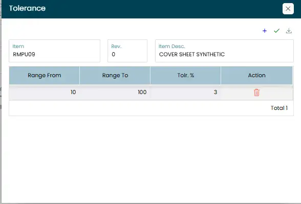

<div data-category="Purchase Order" data-title="Tolerance %" data-updated="December 01, 2025" data-contributors="RoadmapIT" data-breadcrumb="Home,Purchase Order,Tolerance %">
  <div class="page-content">
    <p>The tolerance level for the supplier and the corresponding items can be defined on the following screen. This feature allows you to specify acceptable variations in quantity range based on the defined tolerance settings.</p>

    <p class="fst-italic">Note: The tolerance % is available only for the items where the tolerance level is mentioned as Supplier level in the item master</p>

    

    <ul style="list-style-type: none; align-content: center">
      <li class="mouse-icon">Enter the Range From and Range To value.</li>
      <li class="mouse-icon">Enter the respective Tolerance Percentage.</li>
      <li class="mouse-icon">
        Click on
        <i class="bi bi-check-lg fs-4 mx-1 text-success"></i>
        to save the range.
      </li>
    </ul>
  </div>
</div>
